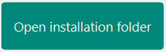
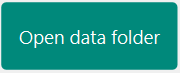
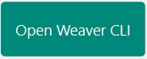
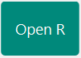
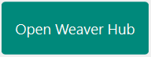
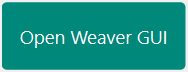
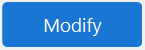
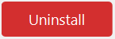

Managing Installed Versions#
Available actions#
All installed versions appear as a list in the Installed Versions tab. Each version has its own entry with a set of action buttons for opening or managing that installation. Expand Actions to show the available shortcuts.
Warning
If an installed version does not meet an action’s requirements, using that action displays a warning that identifies the missing requirements.
Common actions#
The following actions are available across operating systems. Some are shown only for Desktop editions or when the required application or feature is installed.
Open installation folder#
Button image:

Desktop edition required: No
Required programs: None
Required components: None
Functionality: Opens the folder containing the installed program files.

Open data folder#
Button image:

Desktop edition required: No
Required programs: None
Required components: None
Functionality: Opens the mutable-data folder for this version and edition, when it exists.

Open Weaver CLI#
Button image:

Desktop edition required: No
Required programs: None
Required components: None
Functionality: Opens the installed CLI in a terminal: Command Prompt on Windows, Terminal.app on macOS, or an available Linux terminal emulator such as GNOME Terminal, Konsole, XFCE Terminal, or xterm. On Linux, a supported terminal emulator must be installed. The terminal remains open after the CLI exits so you can review its output.

Open R#
Button image:

Desktop edition required: No
Required programs: R
Required components: R packages
Functionality: Launches R with the selected installation’s private R library. R must be installed and discoverable on the system.

Open Weaver Hub#
Button image:

Desktop edition required: Yes
Required programs: R 4.2 or newer
Required components: R packages
Functionality: Opens Weaver Hub. The R package must be installed, and R 4.2 or newer with a discoverable
Rscriptexecutable is required.

Open Weaver GUI#
Button image:

Desktop edition required: Yes
Required programs: None
Required components: Weaver Graphical Interface
Functionality: Opens Weaver GUI. The graphical-interface feature must be installed.

Operating-system-specific actions#
The following actions depend on the operating system.
Modify
Button image:

Desktop edition required: No
Required programs: None
Required components: None
Functionality: Opens Windows Installer maintenance for the selected version, where you can change its installed components.

Uninstall
Button image:

Desktop edition required: No
Required programs: None
Required components: None
Functionality: Asks for confirmation, then removes the selected version through Windows Installer.